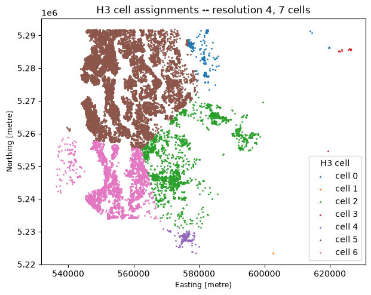
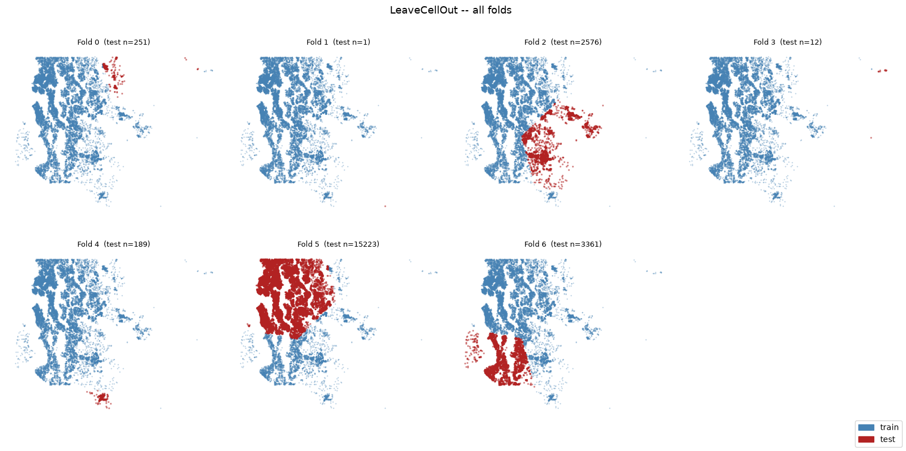
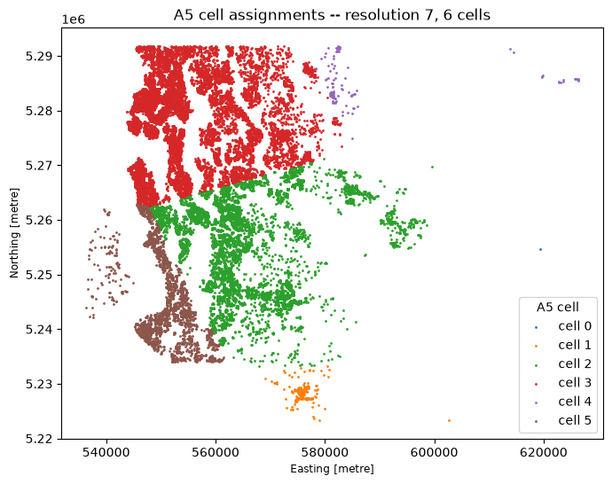
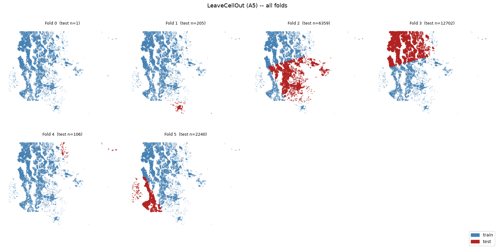
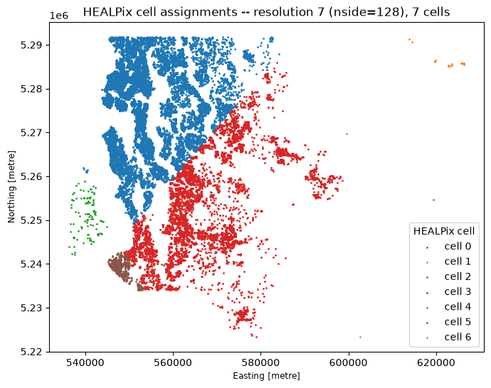
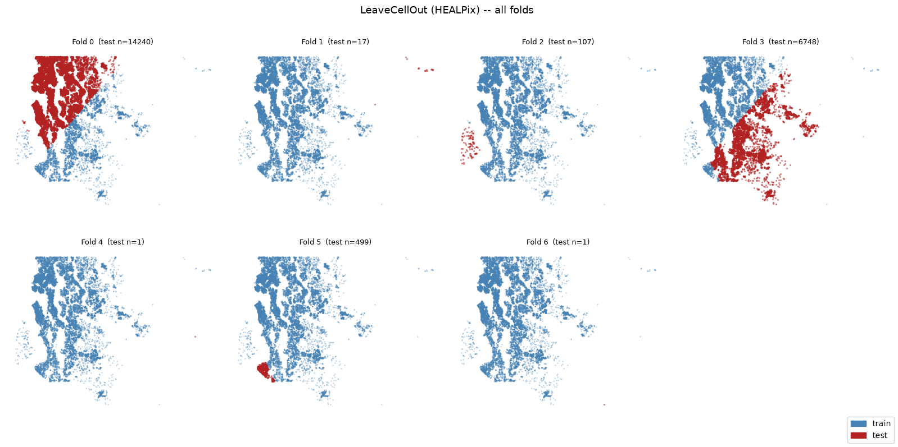

Leave Cell Out¶
LeaveCellOut implements spatial block cross-validation using a discrete
global grid system (DGGS). Each fold holds out one grid cell as the test set;
the training set is all observations in every other cell.
This is the leave-one-block-out analogue of CellStratifiedKFold, which
distributes each cell’s observations across all folds instead of holding them
out whole. Use LeaveCellOut when you want to evaluate how well a model
generalises to an entirely unseen geographic region.
import geodatasets
import geopandas as gpd
import matplotlib.patches as mpatches
import matplotlib.pyplot as plt
import numpy as np
import pandas as pd
from spml.validation import LeaveCellOut
gdf = gpd.read_file(geodatasets.get_path("geoda.home_sales")).to_crs("EPSG:32610")
print(
f"n = {len(gdf)} sales | price ${gdf.price.min():,.0f} – ${gdf.price.max():,.0f}"
)
n = 21613 sales | price $75,000 – $7,700,000
H3 grid¶
H3 resolution 4 yields 7 occupied cells over King County. Increase
the resolution for finer-grained blocks (resolution 5 gives ~26 cells
over this dataset). Use min_test_size to exclude cells with very few
observations from serving as test folds.
cv = LeaveCellOut(grid="h3", resolution=4)
splits = list(cv.split(gdf))
print("Resolution :", cv.resolution_)
print("Test folds :", cv.n_cells_, "(one per occupied cell)")
Resolution : 4
Test folds : 7 (one per occupied cell)
Cell assignments¶
fig, ax = plt.subplots(figsize=(7, 8))
unique_cells, cell_int = np.unique(cv.cell_ids_, return_inverse=True)
gdf.plot(ax=ax, column=cell_int, categorical=True, markersize=1)
ax.legend(labels=["cell " + str(i) for i in range(len(unique_cells))], title="H3 cell")
ax.set_title(
"H3 cell assignments -- resolution "
+ str(cv.resolution_)
+ ", "
+ str(cv.n_cells_)
+ " cells"
);

Fold sizes¶
pd.DataFrame(
[
{"fold": i, "test size": len(te), "train size": len(tr)}
for i, (tr, te) in enumerate(splits)
]
)
| fold | test size | train size | |
|---|---|---|---|
| 0 | 0 | 251 | 21362 |
| 1 | 1 | 1 | 21612 |
| 2 | 2 | 2576 | 19037 |
| 3 | 3 | 12 | 21601 |
| 4 | 4 | 189 | 21424 |
| 5 | 5 | 15223 | 6390 |
| 6 | 6 | 3361 | 18252 |
All folds¶
ncols = 4
nrows = int(np.ceil(cv.n_cells_ / ncols))
fig, axes = plt.subplots(nrows, ncols, figsize=(4 * ncols, 4 * nrows))
axes = axes.flat
for i, (train, test) in enumerate(splits):
ax = axes[i]
gdf.iloc[train].plot(
ax=ax,
color="steelblue",
markersize=0.3,
alpha=0.4,
)
gdf.iloc[test].plot(
ax=ax,
color="firebrick",
markersize=2,
alpha=0.4,
)
ax.set_title("Fold " + str(i) + " (test n=" + str(len(test)) + ")", fontsize=9)
ax.set_axis_off()
for ax in list(axes)[cv.n_cells_ :]:
ax.set_visible(False)
fig.legend(
handles=[
mpatches.Patch(color="steelblue", label="train"),
mpatches.Patch(color="firebrick", label="test"),
],
loc="lower right",
)
fig.suptitle("LeaveCellOut -- all folds", fontsize=13)
plt.tight_layout()

A5 grid¶
The A5 (Icosahedral Snyder Equal Area) grid partitions the globe into equal-area pentagonal cells. Resolutions 0–30 progress from coarsest to finest. Resolution 7 yields 6 occupied cells over King County, comparable to H3 resolution 4.
cv_a5 = LeaveCellOut(grid="a5", resolution=7)
splits_a5 = list(cv_a5.split(gdf))
print("Resolution :", cv_a5.resolution_)
print("Test folds :", cv_a5.n_cells_, "(one per occupied cell)")
Resolution : 7
Test folds : 6 (one per occupied cell)
Cell assignments¶
fig, ax = plt.subplots(figsize=(7, 8))
unique_cells, cell_int = np.unique(cv_a5.cell_ids_, return_inverse=True)
gdf.plot(ax=ax, column=cell_int, categorical=True, markersize=1)
ax.legend(labels=["cell " + str(i) for i in range(len(unique_cells))], title="A5 cell")
ax.set_title(
"A5 cell assignments -- resolution "
+ str(cv_a5.resolution_)
+ ", "
+ str(cv_a5.n_cells_)
+ " cells"
)
plt.tight_layout()

All folds¶
ncols = 4
nrows = int(np.ceil(cv_a5.n_cells_ / ncols))
fig, axes = plt.subplots(nrows, ncols, figsize=(4 * ncols, 4 * nrows))
axes = axes.flat
for i, (train, test) in enumerate(splits_a5):
ax = axes[i]
gdf.iloc[train].plot(
ax=ax,
color="steelblue",
markersize=0.3,
alpha=0.4,
)
gdf.iloc[test].plot(
ax=ax,
color="firebrick",
markersize=2,
alpha=0.4,
)
ax.set_title("Fold " + str(i) + " (test n=" + str(len(test)) + ")", fontsize=9)
ax.set_axis_off()
for ax in list(axes)[cv_a5.n_cells_ :]:
ax.set_visible(False)
fig.legend(
handles=[
mpatches.Patch(color="steelblue", label="train"),
mpatches.Patch(color="firebrick", label="test"),
],
loc="lower right",
fontsize=10,
)
fig.suptitle("LeaveCellOut (A5) -- all folds", fontsize=13)
plt.tight_layout()

HEALPix grid¶
HEALPix (Hierarchical Equal Area isoLatitude Pixelization) divides the sphere
into equal-area pixels arranged in rings of constant latitude. The resolution
parameter is log₂(nside), so resolution 7 = nside 128.
At this resolution, 7 cells cover King County — matching H3 resolution 4.
cv_hp = LeaveCellOut(grid="healpix", resolution=7)
splits_hp = list(cv_hp.split(gdf))
print("Resolution :", cv_hp.resolution_, f"(nside={1 << cv_hp.resolution_})")
print("Test folds :", cv_hp.n_cells_, "(one per occupied cell)")
Resolution : 7 (nside=128)
Test folds : 7 (one per occupied cell)
Cell assignments¶
fig, ax = plt.subplots(figsize=(7, 8))
unique_cells, cell_int = np.unique(cv_hp.cell_ids_, return_inverse=True)
gdf.plot(ax=ax, column=cell_int, categorical=True, markersize=1)
ax.legend(
labels=["cell " + str(i) for i in range(len(unique_cells))], title="HEALPix cell"
)
ax.set_title(
"HEALPix cell assignments -- resolution "
+ str(cv_hp.resolution_)
+ f" (nside={1 << cv_hp.resolution_}), "
+ str(cv_hp.n_cells_)
+ " cells"
)
plt.tight_layout()

All folds¶
ncols = 4
nrows = int(np.ceil(cv_hp.n_cells_ / ncols))
fig, axes = plt.subplots(nrows, ncols, figsize=(4 * ncols, 4 * nrows))
axes = axes.flat
for i, (train, test) in enumerate(splits_hp):
ax = axes[i]
gdf.iloc[train].plot(
ax=ax,
color="steelblue",
markersize=0.3,
alpha=0.4,
)
gdf.iloc[test].plot(
ax=ax,
color="firebrick",
markersize=2,
alpha=0.4,
)
ax.set_title("Fold " + str(i) + " (test n=" + str(len(test)) + ")", fontsize=9)
ax.set_axis_off()
for ax in list(axes)[cv_hp.n_cells_ :]:
ax.set_visible(False)
fig.legend(
handles=[
mpatches.Patch(color="steelblue", label="train"),
mpatches.Patch(color="firebrick", label="test"),
],
loc="lower right",
fontsize=10,
)
fig.suptitle("LeaveCellOut (HEALPix) -- all folds", fontsize=13)
plt.tight_layout()
